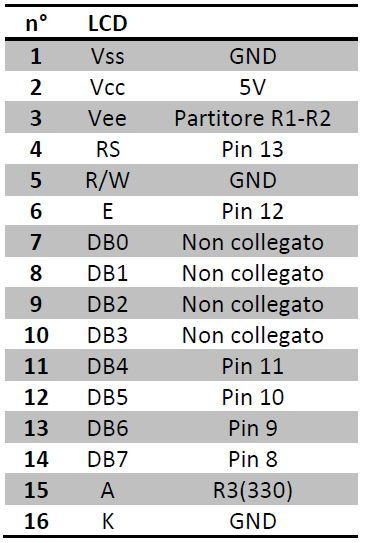

Un display LCD 16x2 possiede 2 righe da 16 colonne, ovvero ciascuna riga contiene 16 caratteri.
Vo serve per il contrasto luminoso, si è trovato un ottimo contrasto utilizzando una resistenza R1=22kΩ e una R2=1kΩ.
Per la retroilluminazione, tra il piedino di Vret+ e Vcc è stata inserita una resistenza di 330Ω per limitare la corrente a 15mA.
Attraverso l’istruzione:
LiquidCrystal lcd(RS, Enable, D4, D5, D6, D7); è possibile utilizzare i pin di arduino a propria scelta.#include <LiquidCrystal.h>
Questa istruzione serve per includere nello sketch la libreria contenente le funzioni per controllare il display.
LCD(pin utilizzati)LiquidCrystal lcd(12, 11, 5, 4, 3, 2);
Serve per utilizzare i pin di arduino a propria scelta.
BEGIN lcd.begin(16, 2);
Inizializza lcd a x colonne e y righe
SET CURSOR lcd.setCursor(0, 1);
Imposta il cursore di scrittura alla colonna X e alla riga Y.
PRINTlcd.print("hello, world!");
Scrive sul display una stringa.
CLEAR lcd.clear();
Cancella il contenuto del display.
DISPLAY-NODISPLAYAccendere il display:
lcd.display();
Spegnere il display:
lcd.noDisplay();
Codice di esempio:
#include <LiquidCrystal.h>
// initialize the library with the numbers of the interface pins
LiquidCrystal lcd(12, 11, 5, 4, 3, 2);
void setup() {
// set up the LCD's number of columns and rows:
lcd.begin(16, 2);
// Print a message to the LCD.
lcd.print("hello, world!");
}
void loop() {
// set the cursor to column 0, line 1
// (note: line 1 is the second row, since counting begins with 0):
lcd.setCursor(0, 1);
// print the number of seconds since reset:
lcd.print(millis() / 1000);
}{kind=link}
{kind=link}